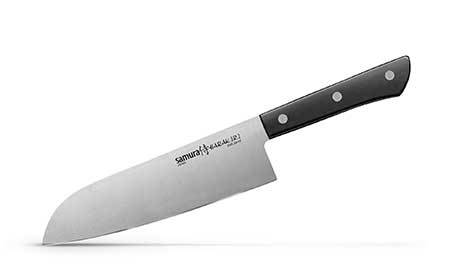
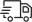

Главная Каталог товаров Нож Samura Harakiri Black

- 
9800 тг
купитьМастерские кухонные ножи с тонким лезвием из высокотехнологичной стали AUS 8 («Aichi Steel») и “деревянной” рукояткой. Двусторонняя заточка острых ножей SAMURA HARAKIRI на водных камнях привлекает своим удобством не только европейцев, но и самих японцев.
 Оплата и доставка
Алматы - БЕСПЛАТНО
- Самовывоз сегодня
- Оплата при получении
гарантия
- 12 месяцев гарантии
от производителя
- Обмен и возврат в течение 30 дней
SAMURA - качественные ножи из Японии
Компания «Самура» предлагает большой выбор японских кухонных ножей и аксессуаров. В магазинах ножей Samura Вы можете купить нож неизменно высокого качества и по доступной цене.
Магазины ножей Samura предлагают великолепный выбор кухонных ножей, который удовлетворит потребности любого покупателя: от недорогих серий до наборов luxury класса. Купить нож можно не только в Москве, но и во многих городах России, а также в Белоруссии и Казахстане. Если Вы хотите купить нож Samura в магазине - посетите раздел Где купить.
Если Вы хотите купить нож, но у Вас нет времени на поездку, Вы всегда можете воспользоваться Интернет–магазином ножей Samura. На сайте магазина кухонных ножей можно не спеша ознакомиться с ассортиментом японских ножей, изготовленных из различных материалов – керамических и стальных - однослойных, трехслойных и многослойных. Чтобы кухонные ножи дольше сохраняли остроту - рекомендуем приобрести специальную подставку или магнитный держатель. Интернет–магазин ножей Samura представляет в своем ассортименте ножи для всех кухонных операций.